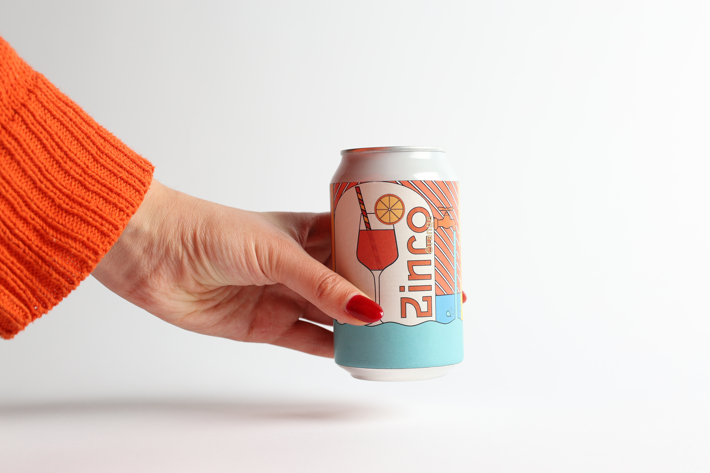
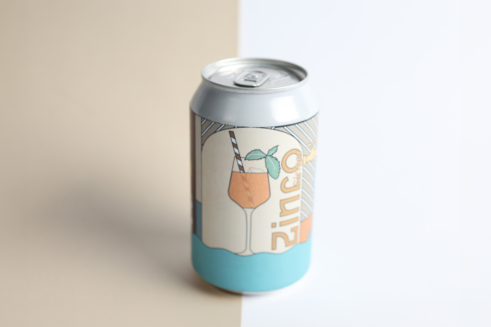
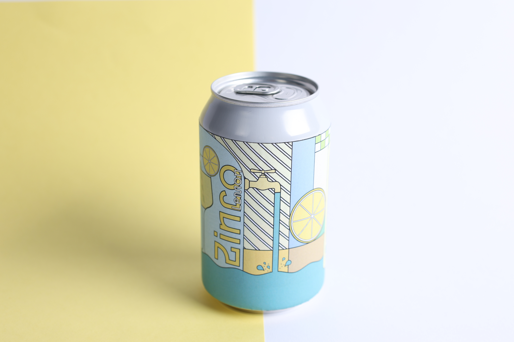

Zinco – Yes You Can
For this packaging design assignment, we created a fictional canned version of the iconic Aperol Spritz. The goal was to design a brand-consistent, eye-catching can that captures the unmistakable Aperol feeling — vibrant, light-hearted, and endlessly summery.
We leaned fully into the world of la dolce vita: golden hours, clinking glasses, sun-drenched terraces, and the carefree rhythm of an Italian afternoon. With bold colors, playful energy, and that signature orange glow, the design aims to instantly evoke the joy of Aperitivo time — wherever you are, straight from the can.
teamwork with: Fien Callens